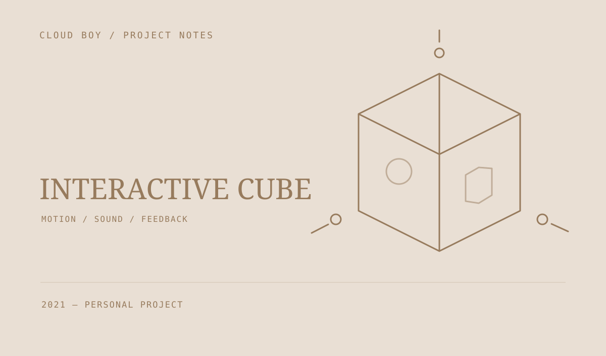

交互认知魔方
将姿态传感器、按键、OLED 和语音反馈组合起来：转动方块、辨认朝向，再通过声音提示完成简单的匹配小游戏。

让物理动作参与交互
早期原型把树莓派、姿态传感器、OLED、按键与语音模块连接起来。传感器读取方块的朝向，屏幕和声音提供反馈，让交互从屏幕里的按钮延伸到手中的动作。
一个声音匹配小游戏
游戏模块播放动物提示音，再读取方块朝上的面并比对答案。工程另保留了姿态估计、蓝牙与通信、震动电机和显示模块的实验代码。
保留一次硬件尝试
这份记录主要保存硬件交互和软件组织方式，包含传感器读取、声音与显示反馈、小游戏逻辑等模块。它是一份 2021 年的历史原型，本次整理没有重新接线或验证实物。